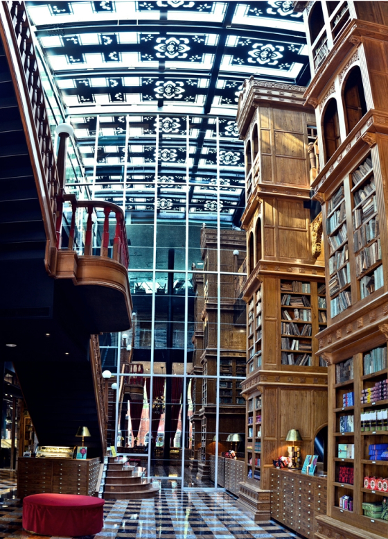

Attraction 観光名所
高美湿地

台中から北西へ約20km、大甲溪の河口に広がるおよそ1500ヘクタールの高美湿地は、天気など条件が重なると周りの風景を鏡面のように反射されることから「台湾のウユニ塩湖」と呼ばれて注目を集めています。湿地には100種以上の鳥が生息しており、バードウォッチングを楽しんでいる人も！周辺には海から吹き付ける風を利用した風力発電の施設があり、自然の景色と人工物が融合して独特の景観をつくり出しています。穴場のスポットです。

干潮と日暮れが重なるタイミングの景色がおすすめです。
彩虹眷村

台湾中部台中市には「彩虹眷村」というインパクトのある場所があります。一度見たら忘れられない鮮やかな色使いの絵で埋め尽くされたこの地区、日本語にすると「虹の村」と称されるこの場所は、家にも壁にも道路にもびっしりと絵が描かれています。そしてこの絵を描いたのは、たった一人のおじいちゃんなのです。今回は見れば元気になる台中市の必見スポットをご紹介します。

周辺住民の方々のご迷惑とならないように早朝や深夜は避けて、日中に訪れましょう。
Museum 文化施設
文化の街とも呼ばれる台中。 おすすめの文化施設をご紹介します。
アンティーク博物館
新天地西洋博物館
サザビーズやクリスティーズから厳選された、千点を超える西洋アンティークの収蔵品を展示しています。
科学美術館
アジア近代美術館

20世紀以降のアジア各国の画家や彫刻家による作品を集めて展示しています。
屋内外美術館
勤美術館
絵画、彫刻、インスタレーション、マルチメディア作品など、多様な現代アート作品が展示されています。
歴史文学を学ぶ
台中文学館
日本統治時代に警察宿舎として建てられた建築物を修繕し、文学公園として開放しています。
Sweets スイーツ
宮原眼科
台湾全土でも大人気のスイーツが集まる台中市で絶対人気を誇るお店、宮原眼科をご紹介します。

宮原眼科は、日本統治時代の1927年、日本人の宮原武熊という眼科医が開院し、1945年までは台中で最大規模の眼科診療所だった場所です。宮原医師が日本に帰国後、パイナップルケーキとチーズケーキで有名な台湾の日出グループが、1年半の時間をかけて建物を修復し、店舗にしました。


現在は、歴史的な特徴を持つ建物や、台湾グルメやスイーツを楽しむ人々で、とても賑わっています。